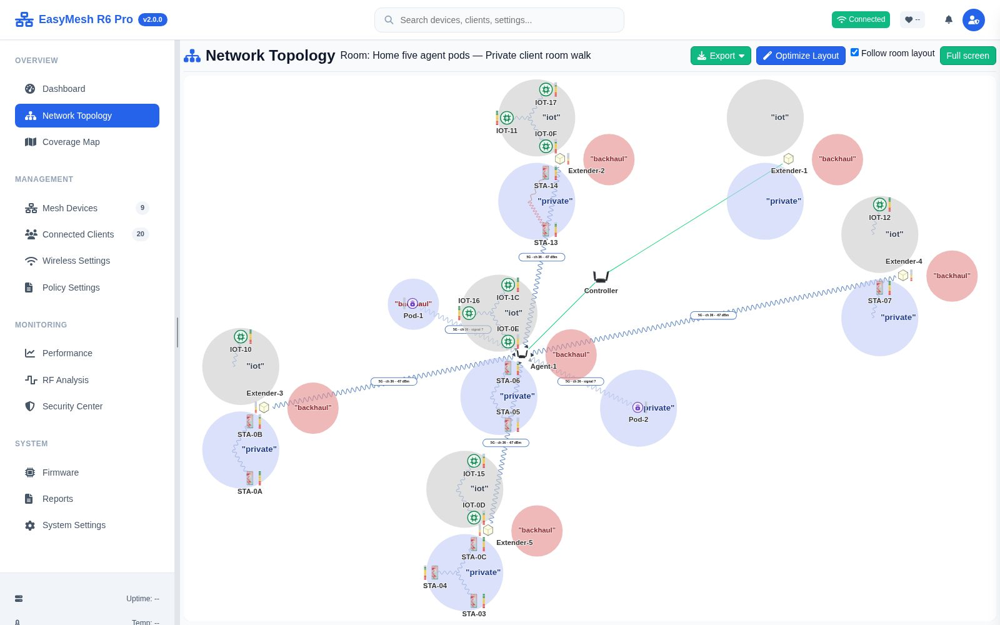
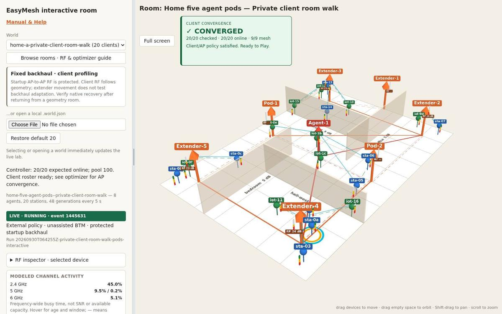
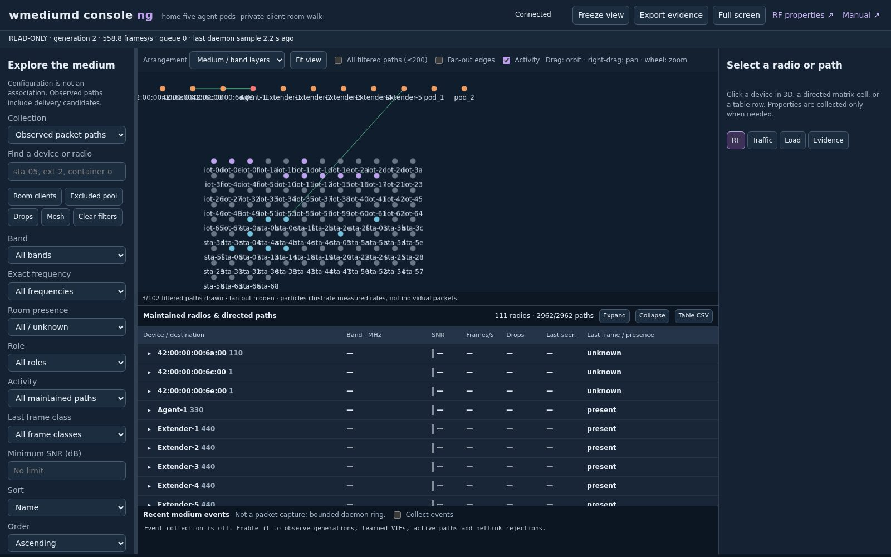

boardfarmdevs · EasyMesh labs · the target configuration · 6 October 2026
OpenSync pods inside RDK EasyMesh
RDK-B's EasyMesh controller and EMOSA in one gateway image. Two unchanged OpenSync 6.6.1
pods join as EasyMesh agents: they onboard over GRE, move to the EasyMesh Wi-Fi backhaul and
report their own statistics over MQTT. Drawn as built in rdk-1004: everything of
EMOSA's runs in the gateway, its ports, the pods' broker and the end of their GRE included,
and no container is left but the pods.
rdk-1004 · rev140
The target configuration, built from scratch again on 8 October
with EASYMESH_EMOSA=1 EASYMESH_EMOSA_IN=gateway and free page reporting; its gateway
image (21) carries EMOSA, its forwarder, mosquitto and the pods' onboarding VAP, no container but
the pods. The two Raspberry Pi pods left it after their 8-hour soak (8 October).
em_cli 192.168.2.140:29610 · Console NG
:29611 · room :29612.
rdk-emosa-1005 · rev120
The target configuration built from scratch on
6 October with no container but the pods, on gateway image 16 since 8 October.
em_cli 192.168.2.120:22010 · Console NG :22011 ·
room :22012. Reached from outside through the hosts' gateway,
easymesh-remote.
Built from
meta-cmf-bananapi-vcpe (the RDK lab, the gateway image with
BUILD_EMOSA=1, recipe emosa) and emosa-lab (EMOSA, the lab steps
deploy/rdk-lab/vm/lab.sh up c gateway).
Inside rdk-1004
1 · OVSDB: the operator's redirect once, then the gateway's forwarder to each pod's agent2 · IEEE 1905: EasyMesh with RDK's controller3 · data: GRE to the gateway's GTP3 · data: the EasyMesh Wi-Fi backhaul4 · MQTT: the pods' statistics to the gateway's broker
1A pod joins
From power-on to an EasyMesh agent with the controller's networks, about two minutes.
The pod boots onto its bootstrap uplink: its station joins the gateway's own opensync-lab-bhaul, wifi1.4 on the 5 GHz radio, a VAP kept out of EasyMesh.
The gateway's GTP, emosa-gtp on bridge brpodbh, leases it a 169.254.2.x address; OpenSync builds a gretap to .1, which the GTP makes a port of brlan0.
OpenSync dials its redirector, 10.101.0.40:6640, over the LAN and the gateway's WAN. The operator's redirect answers there, once (a stand-in on the VM, plan 5.3): manager_addr is the gateway's front port, tcp:10.0.0.1:6640.
EMOSA's forwarder in the gateway carries the pod to the fleet on loopback. The fleet admits it, records it on /nvram, starts its agent, writes manager_addrtcp:10.0.0.1:6651…6690 and hangs up; the pod reconnects, through the forwarder, to its agent.
The agent opens its 1905 socket on its macvlan in namespace emosa and onboards: AP-Autoconfiguration Search and Response, M1, M2.
It writes the M2's networks to the pod in one guarded OVSDB transaction, counted applied once the pod's State shows them.
Option 1: it moves the pod's station to the gateway's mesh_backhaul (02:00:00:89:2b:59) as a 4-address Multi-AP station, applied within 90 s.
2EasyMesh, both ways
Each agent speaks for its pod; RDK's controller sees eight agents.
Topology: the pod's radios, BSSes and clients, and its backhaul station with its parent BSSID.
Metrics: periodic AP metrics and link metrics, made from the pod's own statistics.
Client steering: a steering request becomes a BTM request through the pod's steering window.
Backhaul steering: the controller moves a pod's station to another backhaul BSS; the target is kept for the pod's later starts.
Renewal: an agent that hears no Topology Query for 120 s onboards again, as after a controller restart.
3The pods' data
Two ways into the home LAN. Every OpenSync restart lands a pod on the first.
GRE to the gateway's GTP, the baseline: a 3-address station on opensync-lab-bhaul, one gretap per pod lease, a port of brlan0. The underlay stays on its own bridge, brpodbh, which the gateway's firewall accepts.
The EasyMesh Wi-Fi backhaul, option 1: a 4-address station on a mesh_backhaul BSS, bridged into the pod's br-home, no GRE. The controller can move it between the gateway's and the extenders' backhaul BSSes.
A switch not applied in 90 s holds the pod on GRE until it is admitted anew.
4The pods' statistics
OpenSync's own telemetry, turned into EasyMesh for the controller and the optimizer.
Each pod's qm publishes client reports and a channel survey every 5 s to 10.0.0.1:8883: MQTT over mutual TLS, the pod's device certificate and the broker's both from the lab's CA (the operator's side, on the VM).
The broker is the gateway image's mosquitto. Each agent subscribes to its pod's topic on the gateway's own loopback, 127.0.0.1:1883.
The agent reports them as EasyMesh: AP metrics, associated and unassociated station link metrics.
The optimizer reads them from the controller like any agent's, and steers the pods' clients too.
Addresses and ports
Address
What
Goes to
10.101.0.40:6640
the pods' redirector: the operator's redirect (on the VM)
sends each pod to tcp:10.0.0.1:6640
10.0.0.1:6640
the fleet's front port, through emosa-forward-c
the gateway's 127.0.0.1:6640
10.0.0.1:6651–6690
one port per pod's agent, through it too
the gateway's loopback
10.0.0.1:8883
MQTT from the pods, mutual TLS
mosquitto in the gateway
127.0.0.1:1883 in the gateway
the agents' MQTT
the same mosquitto, plain
169.254.2.1/25
the gateway's GTP: DHCP, the GRE remote
brpodbh, with wifi1.4
192.168.2.140:29610/1/2
em_cli · Console NG · the room
rdk-1004
192.168.2.120:22010/1/2
the same
rdk-emosa-1005
Identities
RDK's controller
00:60:2f:da:68:d4
the gateway's own agent, the co-located one
00:60:2f:da:68:e4
pod-1's agent, on em2
02:72:f9:7f:07:85
pod-2's agent, on em1
02:c2:b8:31:3a:f8
the gateway's mesh_backhaul BSS
02:00:00:89:2b:59
the pods' onboarding AP, the gateway's wifi1.4
02:00:00:33:2b:87
An agent's AL MAC derives from its pod's serial (emosa-lab spec 2.2), so a pod keeps its EasyMesh identity across fleets and implementations.
In the gateway's 1 GiB
the gateway container505 MiB median · 515 peak
onewifi_em_ctrl38 MiB PSS · 41 % of a core
onewifi_em_agent32 MiB PSS · 1 % of a core
emosa-agent-c, each5.0 MiB PSS · 0.6 % of a core
mosquitto, the pods' broker1.4 MiB PSS
emosa-forward-c1.0 MiB PSS · under 0.01 % of a core
emosa-fleet-c0.7 MiB PSS · 0.02 % of a core
the GTP, emosa-gtp's dnsmasq0.4 MiB PSS
Sampled every 30 s for 30 minutes on rdk-1004 through a room catalog on 6 October, everything of EMOSA's in the gateway; bars against the container's 1 GiB. EMOSA logs through RDK's logger to /rdklogs/logs; its configuration and state stay on /nvram across image upgrades.
This stage · 5 to 9 October 2026
54 / 54catalog rooms in two rounds with no container but the pods (6 October)
8 / 8geometry backhaul rooms in the same two rounds
22 sa pod's restart to its agent, through the gateway's own SSID and GTP
8agents in RDK's controller, the pods' two included
Image 21: the controller retires a radio, a moving station keeps its row (9 October)unified-wifi-mesh 0253 retires a radio its agent leaves out of three reports in a row: pod-2 given two other radios with nothing removed from the controller, the old radio was retired 2.2 s after its agent came back, its rows gone and not back after a controller restart, and the health audit passed after it. 0254 keeps a moving backhaul station's row, so the pod-chain room's hold passed in the geometry set, all five rooms of it, and the chain room on its own. 0252 leaves a sibling radio's own policy request pending. The gateway and the extenders answer ARP only on the interface that has the address (arp_ignore 1, arp_announce 2): every reply for 10.0.0.1 from brlan0's MAC. The pods from opensync-lab fcc15d1 (OpenSync core 0005 to 0009: Plan B's child, cm2's router check, an AP on its station's channel): no AP restart in the rooms. Redeployed in place from 10:26 UTC, the extenders too; both health audits passed, the one right after a bring-up with loss in its first round (open)
Image 20: a pod is another pod's parent (9 October)The chain room (backhaul-pod-chain) passed on rdk-1004: pod-2's uplink on pod-1's 2.4 GHz backhaul BSS through its own 2.4 GHz station, pod-1 under an extender, and the room back to its default after it. unified-wifi-mesh 0251 deletes a BSS row the model removed even when it was its radio's last (a pod's old backhaul station after a move to another band); the pods from opensync-lab 6ddf495 have the DHCP lease's DNS servers in OpenSync's resolver and reach the cloud in seconds. Redeployed in place from 05:11 UTC under another build's load (30 to 37), the bring-up in two recoveries: pod-2's repod lost both its radios, the lab gave it others and put them on the medium only later (emosa-lab 61b050e), and RDK's controller kept the lost radio beside the new one under the same agent (emosa-lab 1ff4d16 has it forget such an agent; the controller's own fix, 0253, is open). Then the health audit passed (100 clients; one lost 4 of 10 pings in the first round, none in the second; no OneWifi restart; no contention on the host)
Image 19: a pod's uplink on either band (9 October)EMOSA 81a93e6 (alignment plan 9.5, step 3): a pod keeps a backhaul station on every band and moves its uplink with the station of the target's band, the others disabled; a move it cannot make is refused with reason 0x04, and the answer names the station in use. The pods from opensync-lab c872deb (a station per band). Redeployed in place (02:26 to 03:59 UTC, most of it the pods' slow cloud connection). The health audit failed: OneWifi died four times on two extenders in 45 minutes, no core kept, while rev140 was contended (the VM 17 to 35 % in steal from 02:50 to 05:10); the chain room's ten clients did not settle before its moves
Image 18: the pods' backhaul BSSes are backhaul candidates to RDK (9 October)The pods are Profile-1 agents to RDK and say nothing about their BSSes' roles, so RDK took their backhaul BSS for a fronthaul one. unified-wifi-mesh 0247 gives such a BSS the role its SSID has in the controller's own networks: both pods' backhaul BSSes now show as backhaul (BackhaulUse true) and are among the controller's backhaul candidates, 20 instead of 18. 0248 keeps a pod's backhaul station row right when the station shares its radio's MAC or moves to another band, 0249 sends a backhaul move's operating class on every band, and 0250 takes a backhaul move's answer that names the pod's station on the target's band, as EasyMesh specifies. The groundwork for pods as parents of other pods. Redeployed in place in 46 minutes: the room with the private client's walk and the pods passed; the health audit passed on its second run, the first, right after the bring-up, having seen loss on clients of every access point
Image 17: EMOSA's findings 22 and 23; a BSS's role from the standard report (8 October)EMOSA 9d930bc ends a write the pod never applies at its deadline instead of leaving it open, and keeps a steering window's record until its rows on the pod are gone, so a pod is not left holding rows nobody owns. unified-wifi-mesh 0246 takes a BSS's role (backhaul or fronthaul) from the BSS Configuration Report when RDK's vendor TLV gives none. Only a Profile-3 agent sends that report; to RDK the lab's pods are Profile-1 agents, so their backhaul BSSes are not yet candidates for the controller's backhaul steering. Redeployed in place in 46 minutes, extenders unchanged: the health audit (100 clients, no loss) and the private client's walk with the pods passed
Image 16: the pods' fronthaul says it is a Multi-AP agent's; two more controller fixes (8 October)EMOSA 747167b writes each BSS's role from its M2 into the pod (fronthaul_bss, backhaul_bss), so the pods' hostapd now runs every fronthaul in the fronthaul role (multi_ap=2: the Multi-AP element in its association response to a Multi-AP station, none in beacons): an ordinary client joined one in the health audit with no loss. It also sweeps a steering window's leftover rows and takes a recreated pod back. unified-wifi-mesh 0244 reads a DPP chirp's 1905 length in network byte order and 0245 accepts a radio with no operational BSS, parsing that TLV within its length. Redeployed in place in 47 minutes, extenders included: the health audit (100 clients, no loss) and two rooms passed, among them the private client's walk with the pods
The Pis' 8-hour soak on image 15 passed; the Pis leave rdk-1004 (8 October)08:21 to 16:21 UTC, a sample a minute: both Pi pods up and their agents provisioning in all 396 samples, no re-onboarding and no M2 refused; a client on pi2's AP associated throughout, no loss, 8.0 ms on average. RDK's controller ran as one process the whole time, no restart and no dump, 46.6 MB at the start and 46.7 MB at the end, and logged none of 0243's guards; every agent kept its BSSes. Then both Pis were forgotten by the fleet and taken out of the lab with one fleet restart; the two virtual pods are back provisioning with their five BSSes each
Image 15: the controller no longer dies at a new agent's first onboarding (8 October)em_ctrl crashed when a Pi pod's agent onboarded for the first time: the model it builds to query a new agent's backhaul station took its radio count from whatever the stack held, and copying it read past the stack. unified-wifi-mesh 0243 starts that model with no radios and bounds every radio append and copy. Redeployed in place: the Pis onboarded again, no crash, the health audit passed; then rdk-1004 went to the Pis' 8-hour soak
rdk-1004 built again from scratch; image 14 (8 October)108 minutes, its acceptance and health audit passed, 2.9 GB on the host where it had held 23 GB two days before (the storage plan's items in the build); its VM's balloon reports free pages (the host gets memory back in 2 MiB blocks, so the guest has to compact what it frees). The first try stopped silently in the base step: the kernel purge's dpkg-query under pipefail, fixed. Then image 14: EMOSA with the Pis' work (an M2 set larger than the radio's slots applied in part, a wired pod's eth1 bridged into br-home, the Pis' profile) and the gateway keeping its DHCP leases
Image 12 in both gateways; a gateway that forgets its leases (7 October)the gateway image with EMOSA's stored-policy fix, redeployed in place on rdk-1004 and rdk-emosa-1005: the health audit and the wired extender's outage room passed on both. On the way one client of rdk-1004 had no traffic: RDK's start-up deletes the gateway's DHCP leases while the lab's clients keep their addresses and never ask again, and pod-2 had been given the address of a client the room had off the air, so the client's replies went to the pod. A new lease repaired it; the next gateway image keeps the leases (meta-cmf)
The outage room at 8 s; a stored policy no longer blocks a pod (7 October)the room wanted the wired extender's clients gone 5 s into its outage, where they leave in 1 to 6 s (6 GHz: a scan of every channel and a PMF comeback), so one sample decided it: every band now has 8 s (the owner's choice), 3 of 3 since. EMOSA: a reporting policy kept for a pod's old radio was never replaced and every new policy refused; now the next policy supersedes it (reference, C, specification and vectors), in image 12
rdk-1004 from 23 to 7.2 GB in a day (7 October)the evidence on its own volume, Boardfarm's images only, the cloud image's kernel and extras purged, the journal at 256 MiB, and both pods recreated as clones of their image with their identity kept (they share 194.5 MiB with it). On the way: the lab's bring-up and health audit learnt to leave the physical pods out, a recreated pod that drew other radios left an EMOSA agent refusing every policy (its stored policy keyed by the old radio; fixed in image 12), and the Pis' agents onboarded again every 2.3 minutes, their applies timing out on VIFs the radio cannot start (9.A1); the Pis are stopped until it is fixed. The health audit passed
The rooms with the physical pods on the controller (7 October)With the two Pis on rdk-1004's controller, every start of the room service failed its preflight (17:00 to 18:26 UTC): its health counts the controller's devices, radios and BSSes against the room's own, and em_ctrl keeps a departed agent's rows, so taking the Pis out did not clear it; then the room acceptance counted 11 drawn nodes where the room has 9. A file in the VM now lists the devices the room does not own, by AL MAC, and the mesh health, the optimizer's observer and the acceptance leave them out; opensync-rpi keeps it. With both Pis present the wired extender's outage room passed 3 of 3, then the whole suite: the catalog 27 of 27 and the four geometry rooms with their recovery (the geometry harness needed the same fix)
Two physical pods join rdk-1004, Raspberry Pi 4s over Ethernet (7 October)opensync-rpi's pi1 and pi2 reach the lab's wired LAN port on a VLAN of the lab LAN, dial their image's redirector and are handed to the gateway's EMOSA fleet: RDK's controller lists both ("OpenSync via EMOSA", Ethernet backhaul) next to the lab's two virtual pods, and a client on pi1's AP passed router, internet, DNS and HTTPS. A keeper in the VM puts each Pi's port, profile and fleet entry back after a lab restart or an EMOSA run. Findings: RDK's five-BSS set is refused whole by an agent with fewer slots; a wired pod needs eth1 in br-home; an MT7921U runs its AP and a station on one channel only, so a Wi-Fi backhaul under EMOSA wants a second adapter per Pi
Boardfarm's WAN recovers with no network; new pods clone their image (7 October)Boardfarm's teardown removed its images and its setup rebuilt them, so its recovery path needed Docker Hub and a 1.2 GB build cache. With a patch the WAN step carries, the WAN came back twice in a row on a copy of rdk-1004 with no network, in 94 s each, nothing built; Docker in each lab is down from 5 to 1 GB (rdk-1004's disk 12 to 8.8 GB, rdk-emosa-1005's 9.9 to 7.4). A new pod goes in the VM's btrfs pool: the second pod adds nothing to the first's image
The room evidence on a volume of its own (7 October)rdk-1004's 12 GB of room runs moved onto a 20 GiB volume of the lab's own without a restart, 1.3 GB on the host (rdk-emosa-1005: 3.3 GB, 371 MB); the VM's disk holds none, a rebuild gets it back, and the hourly retention, now run as root as the room service writes the runs, keeps it under 80 %
A VM restart comes up whole, in the hosts' ZFS pool (7 October)rdk-1004 and rdk-emosa-1005 moved into their hosts' pool labs (7.3 and 6.2 GB, a running lab's snapshot in 288 ms and no space); the pods' journals capped at 128 MiB and the builds cleaning up after themselves took them from 33 and 21 GB. The lab's runtime starts EMOSA's pods with the clients and counts the native lab, so a VM restart passes its acceptance, then EMOSA's step
Every em_agent's journal under its cap, the keys out (7 October)the agents printed whole JSON documents one field to a line (OneWifi's Link Reports, the unassociated-station queries and responses, the device configuration and each subdoc) and every network's passphrase; unified-wifi-mesh 0242 sends them to em's debug channel, the configuration documents as name and size, and takes the keys out. Both labs on the new gateway and extender images (the extenders' first since 29 September): no line dropped by em_ctrl or any em_agent through a redeploy and the catalog, 27 of 27
A second lab in the target configuration (6 October)rdk-emosa-1005 on rev120, built from scratch with no container but the pods: two findings for a fresh gateway fixed on the way (emosa-lab cdfaddc); on the final image its suite passed whole: readiness, the catalog 27 of 27, the four geometry rooms
em_ctrl's journal under its cap, its starts included (6 October)its per-message work, the data model's registration and every agent's onboarding to em's debug channel (unified-wifi-mesh 0237 to 0241): through the catalog 101 lines per 30 s on average, 459 at most, of 1000, where it wrote up to 8,500; a controller restart with all eight agents 708 in its busiest 30 s; no line dropped through a redeploy, three starts and the catalog; the M2 line no longer prints passphrases
The wired extender's radios renew once, not for ever (6 October)a radio renewed alone waited at the Channel Preference Query and the policy request for siblings already configured, refusing candidate queries; now, as at the steps before, it does not (0239)
The pods' stations steering-disallowed on every agent (6 October)EMOSA lists each pod's station; the lab puts them in every agent's local and BTM lists through em_cli's policy API; on RDK the controller does not see them on the onboarding SSID at all
No container but the pods (6 October)emosa and em-gtp deleted on rdk-1004: everything of EMOSA's runs in the gateway from its image; a fresh lab never makes them
The pods' GRE ends in the gateway (6 October)their onboarding SSID a VAP of the gateway's own (wifi1.4), kept out of EasyMesh (libwebconfig 0014: as a reported BSS its SSID failed every Topology Response); emosa-gtp on its bridge; RDK's dnsmasq binds per interface; a pod's bootstrap through it in 22 s
EMOSA's ports on the gateway's LAN (6 October)its own forwarder, emosa-forward-c, in place of the lab's proxies; the pods' redirector answered by an operator's redirect on the WAN side
The pods' broker in the gateway (6 October)the image's mosquitto: mutual TLS on 10.0.0.1 for the pods, loopback for the agents; the lab's CA moved to the VM
EMOSA's agents in a network namespace of their ownRDK's controller had taken a pod's agent, whose AL MAC sat on a gateway interface, for its co-located agent and rooted its native backhaul there (emosa-lab finding 17)
The controller's native backhaul, explained and repairedstate lines that say why a candidate is not measured; uncertain marks that expire (unified-wifi-mesh 0235); a pod's backhaul station learned from its Device Information (0236)
A pod whose remembered backhaul BSS is gone falls backa target the controller chose is kept for later starts; out of reach after a restart, it held the pod on GRE. Now the agent waits for the pod to drop the failed switch and switches to the configured upstream (emosa-lab finding 18)
A VM restart brings the whole lab backthe redirector address bound to its bridge, EMOSA's containers, the pods, the medium in order
The room harness on the host's GPUsoftware rendering had starved the host; the rooms now render on Vulkan
Open
No native backhaul steering below the wired extenderthe controller's model has no parent for a wired agent, so pods on its backhaul BSS are not measured
The gateway forgets its DHCP leases at a start, on rdk-emosa-1005fixed from image 13, which rdk-1004 runs; rdk-emosa-1005 on image 12 until its next redeploy: a client the health audit fails after a gateway start needs a new lease
Why the wired extender's radio is renewed aloneits em_config times out now and then (seen on two labs, 6 October); 0239 ends the loop that followed, the cause is not known. The gateway's journal is volatile, 16 MB, about 15 minutes: long runs keep their own copy

The controller's view · em_cli on rdk-1004: Pod-1 and Pod-2 among the extenders, 5 October

The room · the pods as APs in the room model (rdk-emosa-1002, 2 October)

The medium · Console NG, every radio and path
Kept in easymesh-labs site/posters/: update it when the configuration changes.